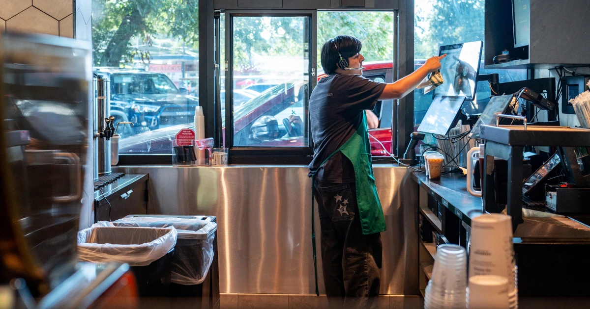
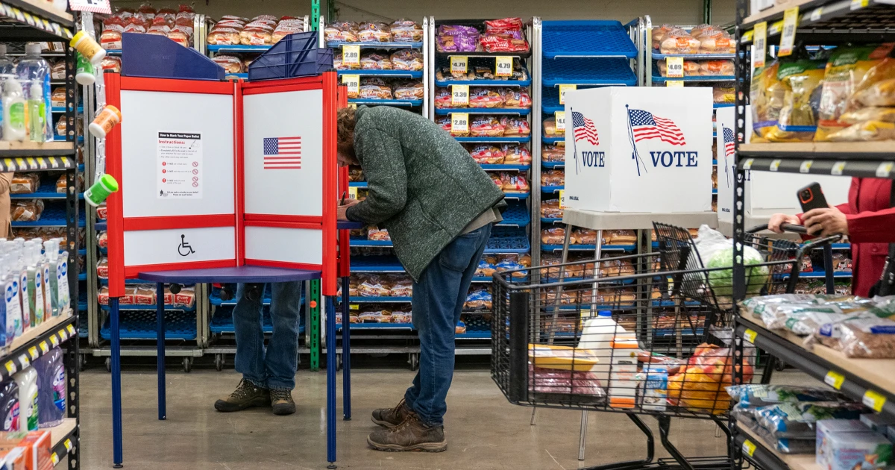
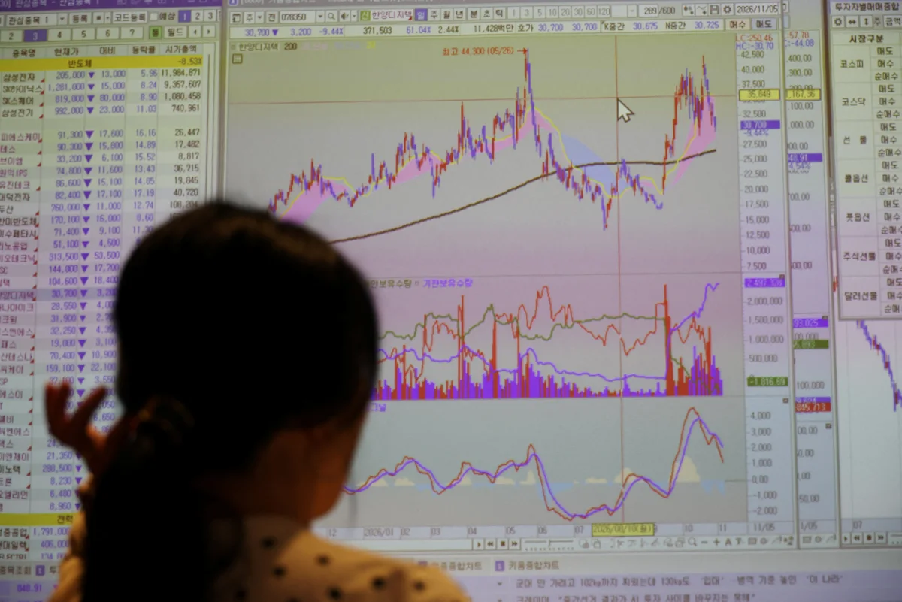

MARKET NEWSROOM
The reporting
behind the signals
A visual source ledger for the selected market, connecting original reporting with the current intelligence view.
LEAD REPORTING
Stories setting the frame
The opening stories in the current regional source set.


MORE HEADLINES
Follow the reporting
The remaining 47 stories in the current source order.
Headlines 005—016 12 stories
 005
005GNews · 2026-11-06 22:52:37Z
↗U.S. Treasury sanctions Canadian firms
 006
006Bloomberg · 2026-11-07 01:54:36 UTC
↗Beijing Vows to Hit Back Against US Sanctions on China Companies
 007
007GNews · 2026-11-06 22:45:45Z
↗008Loma Negra anticipates RIGI-linked volumes, citing a Pampa project of 300,000-350,000 cubic meters of concrete
Associated Press · 2026-11-06 05:08:00Z
↗009Data centers took a beating in the midterm elections. A reckoning may be ahead for tech giants - AP News
BBC News · 2026-11-06 09:57:04Z
↗010Elon Musk appears to signal the end of the road for Cybertruck - BBC
Motley Fool · 2026-11-06 03:20:00Z
↗011The Nasdaq Plunges 5%. What the Data Center Crash Means for Investors - Yahoo Finance
Bloomberg · 2026-11-07 02:26:22 UTC
↗012China Extends Gold-Buying Streak to Two Years as Prices Drop
CNBC · 2026-11-05 15:32:58 UTC
↗013Stocks plunge as election outcome and AI worries crush tech shares
GNews · 2026-11-06 22:40:35Z
↗014The Fastest Production Car In The World Just Broke 310 MPH On A Public Road
Bloomberg · 2026-11-06 22:29:48 UTC
↗015AI-Generated Movie Heading Theaters
The Wall Street Journal · 2026-11-06 04:36:00Z
↗016Exclusive | Major Investors Are Skeptical Anthropic IPO Can Achieve $1.5 Trillion Valuation - WSJ
CNBC · 2026-11-05 14:32:54 UTC
↗How Rising Rates and Policy Changes May Impact Your Insurance
Headlines 017—028 12 stories
017
Bloomberg · 2026-11-06 00:09:55 UTC
↗018Gold Extends Drop on Stronger-Than-Expected US Employment Data
The Wall Street Journal · 2026-11-06 06:55:00Z
↗019Nikkei Falls 6.0%, Posts Biggest Loss in 1.5 Years - WSJ
Bloomberg · 2026-11-06 23:30:58 UTC
↗Elanco Shares Jump After Q3 Beat and Outlook Raise

020CNBC · 2026-11-05 23:00:41 UTC
↗021Holiday hiring and AI in focus with October jobs report on deck
Bloomberg · 2026-11-06 23:49:39 UTC
↗022The Corner Store Brings Its New York Experience to the Las Vegas Strip
Bloomberg · 2026-11-06 22:01:25 UTC
↗023Ann Berry on the Importance of Learning AI
Bloomberg · 2026-11-06 08:59:18Z
↗024Mystery Seller Seeks to Dump $500 Million of Data Center Loans - Bloomberg.com
Bloomberg · 2026-11-06 21:29:28 UTC
↗025Hedge Funds Fled Bullish Oil Bets Ahead of Election Day Drop
CNBC · 2026-11-06 12:11:06 UTC
↗026Stocks Plunge Amid AI Fears and Political Uncertainty
GNews · 2026-11-06 22:35:00Z
↗027Democrats Take Congress as Iran War Price Tag Drives Voters to the Polls
GNews · 2026-11-06 22:34:37Z
↗028Tronox Holdings plc (TROX) Q3 2026 Earnings Call Transcript
Bloomberg · 2026-11-06 21:32:56 UTC
↗Airbnb Surges 12% as Growth Accelerates and Outlook Rises | Closing Bell
Headlines 029—040 12 stories
029 034
034
Bloomberg · 2026-11-07 04:30:00 UTC
↗Why India’s Stock Markets Hold a Session on Diwali: Explainer

030CNBC · 2026-11-04 20:39:30 UTC
↗Democrats won on affordability. Whether they can deliver it is a different story.

031Yahoo Entertainment · 2026-11-06 02:56:00Z
↗032Retail traders dump $257 million in stocks in 5th biggest selling day since 2020 - Yahoo Finance
Bloomberg · 2026-11-06 21:23:32 UTC
↗033Wall Street Grapples With $5.7 Trillion Rout as AI Bets Unwind
BBC News · 2026-11-06 02:57:24Z
↗Global tech stocks plunge as US midterms add to AI slowdown fears - BBC
034GNews · 2026-11-06 22:44:51Z
↗035Nexus Industrial REIT (NXR.UN:CA) Q3 2026 Earnings Call Transcript
Bloomberg · 2026-11-06 19:38:53 UTC
↗036Braskem Owners Pull Funding Offer as Debt Talks Hit Snag
Financial Times · 2026-11-06 05:23:46Z
↗037Japanese stocks post biggest one-day fall since ‘liberation day’ chaos - Financial Times
CNBC · 2026-11-06 13:59:25 UTC
↗038U.S. adds 165,000 jobs in October, unemployment rate drops to 4.1%
CNBC · 2026-11-05 09:26:23 UTC
↗039Wave of bomb threats against European airliners triggers diversions and tarmac searches
CNBC · 2026-11-06 14:15:55 UTC
↗040Holiday Shopping Scams: How AI is Changing the Game
Bloomberg · 2026-11-06 21:05:54 UTC
↗Retail Traders Cautiously Buy Stocks After Worst Rout Since 2025
Headlines 041—051 11 stories
041 048
048
CNBC · 2026-11-06 13:33:54 UTC
↗042The U.S. added 165,000 jobs in October, a bright spot for the economy
GNews · 2026-11-06 22:55:00Z
↗043US FinCEN and Fed Withdraw Proposal to Expand Customer Data Collection on Crypto Transfers, Keeping $3,000 Threshold
Bloomberg · 2026-11-06 23:21:26 UTC
↗044FIGS Beats Earnings as Demand Outstrips Supply, CEO Trina Spear Says
Bloomberg · 2026-11-06 23:26:21 UTC
↗045Sweetgreen CEO Says Sales Rebound After Cyclospora-Related Traffic Drop
Bloomberg · 2026-11-06 22:15:53 UTC
↗046Providing Capital to Tech Companies: Masters In Business with Ann Berry
CNBC · 2026-11-04 17:05:01 UTC
↗047Oil prices drop below $100 as midterms fuel hope for an end to the Iran war
Bloomberg · 2026-11-06 18:48:22 UTC
↗Canadian Dollar Notches Worst Week Since September on Weak Jobs
048GNews · 2026-11-06 22:38:23Z
↗049What’s going on with the stock market?
Bloomberg · 2026-11-05 22:17:59 UTC
↗050Chip Stocks Climb After Rout, But AI Doubts Linger: Markets Wrap
Bloomberg · 2026-11-06 00:24:58 UTC
↗051How a Bank Scandal Is Taking Down Trump’s Ally in Paraguay
GNews · 2026-11-06 22:53:46Z
↗